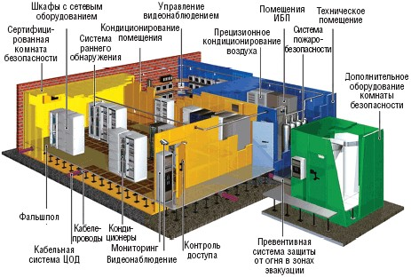

Понятие центра обработки данных. Основные элементы инфраструктуры.
Дата-центр (от англ. data center), или центр (хранения и) обработки данных (ЦОД/ЦХОД) — это специализированное здание для размещения (хостинга) серверного и сетевого оборудования и подключения абонентов к каналам сети Интернет.
Дата-центр исполняет функции обработки, хранения и распространения информации, как правило, в интересах корпоративных клиентов — он ориентирован на решение бизнес-задач путём предоставления информационных услуг.
Консолидация вычислительных ресурсов и средств хранения данных в ЦОД позволяет сократить совокупную стоимость владения IT-инфраструктурой за счёт возможности эффективного использования технических средств, например, перераспределения нагрузок, а также засчёт сокращения расходов на администрирование.
Дата-центры обычно расположены в пределах или в непосредственной близости от узла связи или точки присутствия какого-либо одного или нескольких операторов связи. Качество и пропускная способность каналов не влияют на уровень предоставляемых услуг, поскольку основным критерием оценки качества работы любого дата-центра является время доступности сервера (аптайм).

Разделы проекта ЦОД (центра обработки данных, серверной):
архитектурные решения
система для размещения оборудования
климатическая система
приточно-вытяжная система вентиляции
система электроснабжения
система гарантированного и бесперебойного электропитания
система резервного электропитания ДГУ
система автоматического газового пожаротушения
система удаления продуктов тушения после пожара
система охранно-пожарной сигнализации и оповещения о пожаре
система видеонаблюдения
система контроля и управления доступом
структурированная кабельная сеть
мониторинг
заземление и молниезащита
сметная документация.
Применение современных технологий коллективной разработки программных средств в веб-программировании.
DevOps — это командная работа (между сотрудниками, занимающимися разработкой, операциями и тестированием), нет единого инструмента «DevOps»: это скорее набор (или «инструментальная цепочка DevOps»), состоящий из нескольких инструментов. Как правило, инструменты DevOps вписываются в одну или несколько из этих категорий, что отражает ключевые аспекты разработки и доставки программного обеспечения:
Code — разработка и анализ кода, инструменты контроля версий, слияние кода
Build — инструменты непрерывной интеграции, статус сборки
Test — инструменты непрерывного тестирования, которые обеспечивают обратную связь по бизнес-рискам
Package — репозиторий артефактов, предварительная установка приложения
Release — управление изменениями, официальное утверждение выпуска, автоматизация выпуска
Configure — Конфигурация и управление инфраструктурой, Инфраструктура как инструменты кода
Monitor — мониторинг производительности приложений, опыт работы с конечным пользователем
Непрерывная интеграция — это практика разработки программного обеспечения, которая заключается в слиянии рабочих копий в общую основную ветвь разработки несколько раз в день и выполнении частых автоматизированных сборок проекта для скорейшего выявления и решения интеграционных проблем.
Репозиторий, хранилище — место, где хранятся и поддерживаются какие-либо данные. Чаще всего данные в репозитории хранятся в виде файлов, доступных для дальнейшего распространения по сети.
Репозитории используются в системах управления версиями, в них хранятся все документы вместе с историей их изменения и другой служебной информацией.
Система управления версиями — программное обеспечение для облегчения работы с изменяющейся информацией. Система управления версиями позволяет хранить несколько версий одного и того же документа, при необходимости возвращаться к более ранним версиям, определять, кто и когда сделал то или иное изменение, и многое другое.
Канбан — метод управления разработкой, реализующий принцип «точно в срок» и способствующий равномерному распределению нагрузки между работниками. При данном подходе весь процесс разработки прозрачен для всех членов команды.
Задачи по мере поступления заносятся в отдельный список, откуда каждый разработчик может извлечь требуемую задачу.